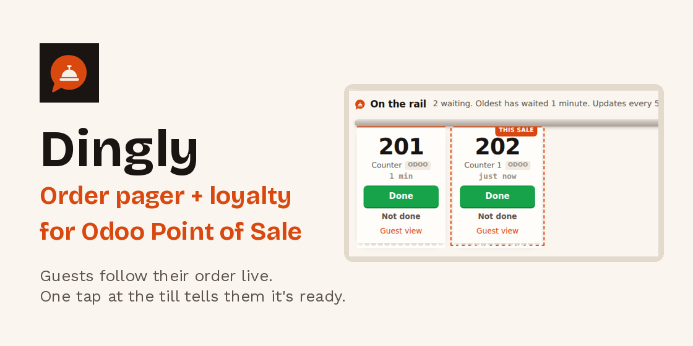
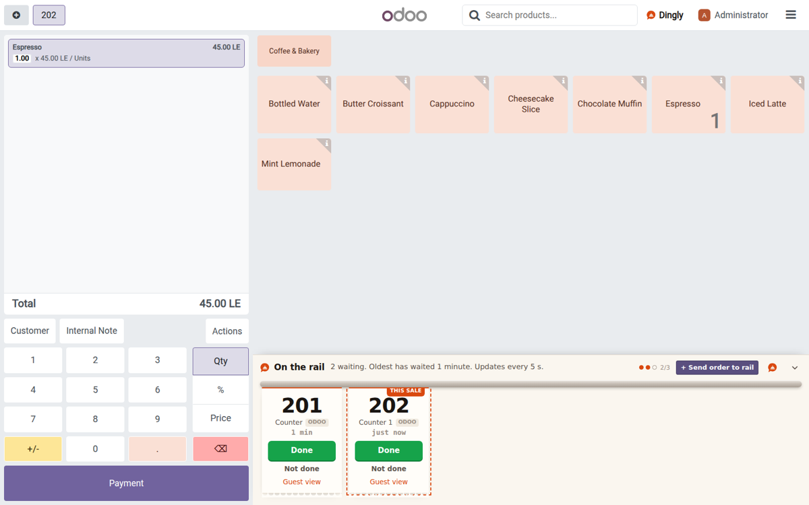
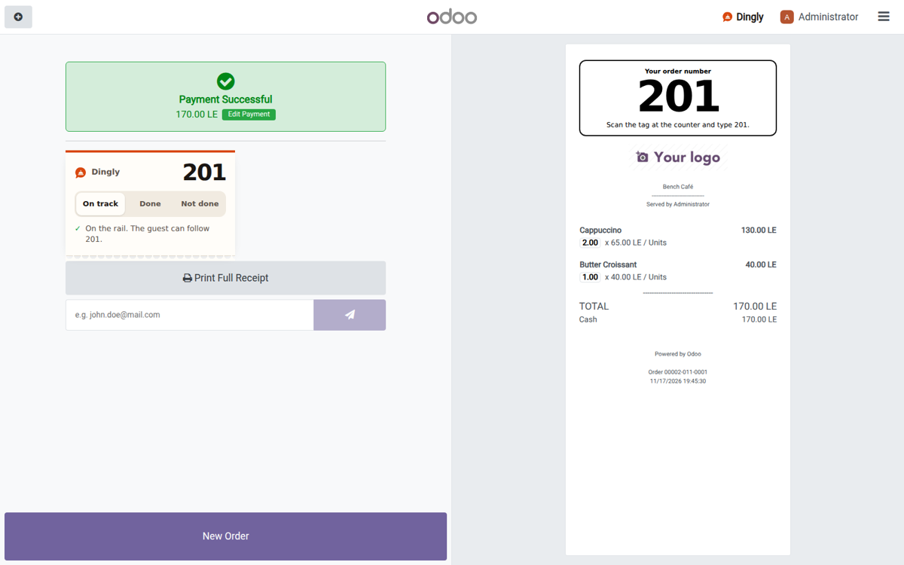
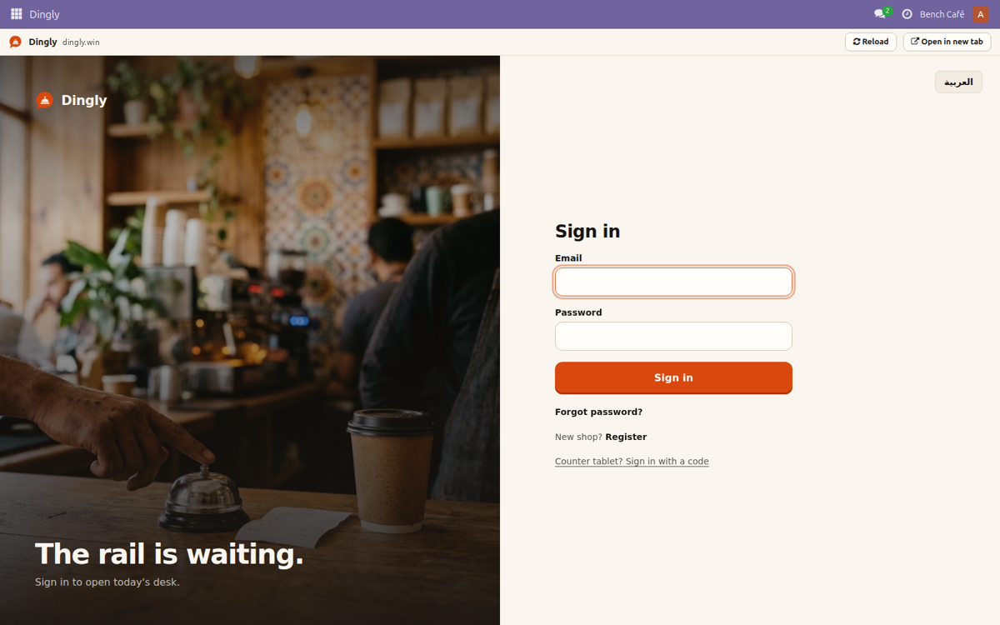
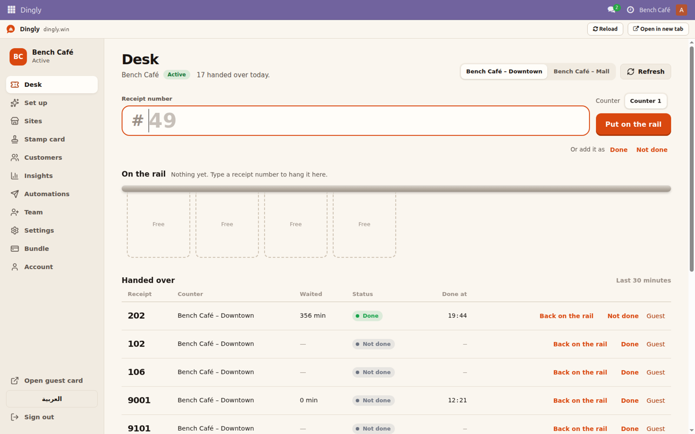
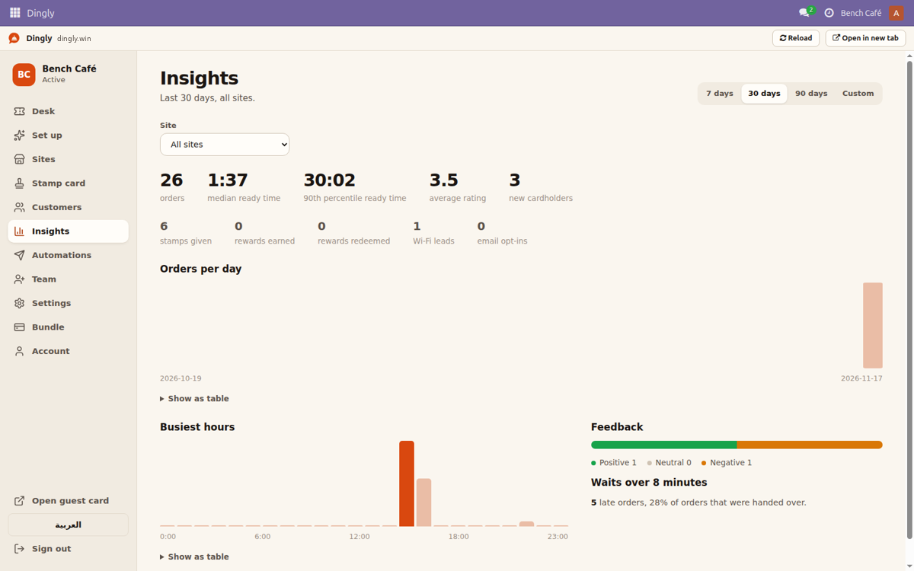
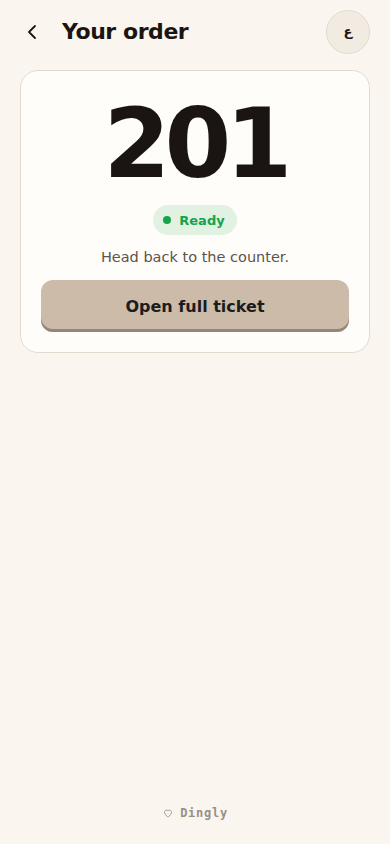

<section class="oe_container" style="padding:24px 0;">
  <div class="oe_row" style="max-width:960px;margin:0 auto;font-family:system-ui,-apple-system,'Segoe UI',Roboto,sans-serif;color:#1a1512;">
    <h2 style="font-size:34px;font-weight:800;text-align:center;margin:0 0 6px;">Dingly for Odoo Point of Sale</h2>
    <p style="font-size:18px;color:#5c534c;text-align:center;margin:0 0 28px;">An order pager and stamp card for cafés and restaurants. No buzzers to buy: guests follow their order on their own phone.</p>
    

    <h3 style="font-size:24px;font-weight:800;color:#d9480f;">How it works</h3>
    <ol style="font-size:16px;line-height:1.7;">
      <li>The guest pays at your Odoo register. The receipt prints the order number in large type.</li>
      <li>They tap the NFC tag or scan the QR at the counter and type that number. Their phone follows the order live.</li>
      <li>The cashier taps <b>Done</b>. The guest's phone shows <b>Ready</b> within seconds, and they collect a stamp.</li>
    </ol>

    <h3 style="font-size:24px;font-weight:800;color:#d9480f;margin-top:32px;">The rail, right in the till</h3>
    <p style="font-size:16px;">Every waiting order hangs on a rail under the product grid: number, counter and minutes waited. Tickets turn amber at 8 minutes and red at 15. Done and Not done wait 5 seconds with Undo, so a mis-tap never pings a guest. Orders from the Dingly web desk show up too.</p>
    
    

    <h3 style="font-size:24px;font-weight:800;color:#d9480f;margin-top:32px;">Your whole Dingly account inside Odoo</h3>
    <p style="font-size:16px;">A <b>Dingly</b> app in Odoo, and a Dingly button in the POS, open the full shop app: desk, sites and menu, stamp card, customers, insights, automations, team and settings. It asks for your Dingly login first, so cashiers only see what their Dingly role allows.</p>
    
    
    

    <h3 style="font-size:24px;font-weight:800;color:#d9480f;margin-top:32px;">What the guest sees</h3>
    

    <h3 style="font-size:24px;font-weight:800;color:#d9480f;margin-top:32px;">Set up in two minutes</h3>
    <ol style="font-size:16px;line-height:1.7;">
      <li>Create your shop at <a href="https://dingly.win" target="_blank">dingly.win</a> and add a site.</li>
      <li>In Dingly, open <b>Sites → Odoo</b> and issue a setup token.</li>
      <li>Install this module, open <b>Point of Sale → Configuration → Dingly Setup</b>, pick the register and paste the token.</li>
    </ol>
    <p style="font-size:14px;color:#5c534c;">Requires a Dingly subscription (billed on dingly.win). Works with Odoo 19 Community and Enterprise. Your Odoo must be served over HTTPS to show the Dingly app inside Odoo. English and Arabic.</p>
  </div>
</section>
